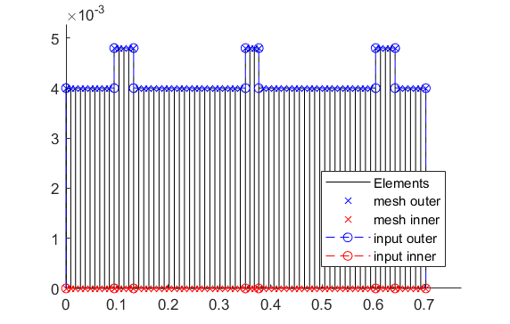
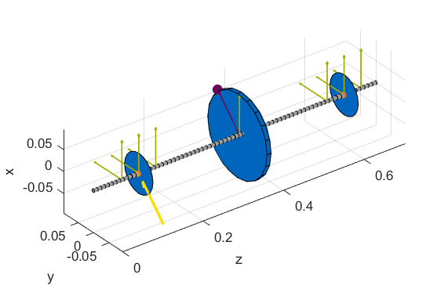
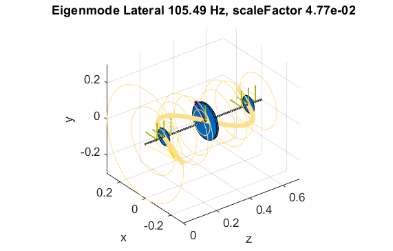
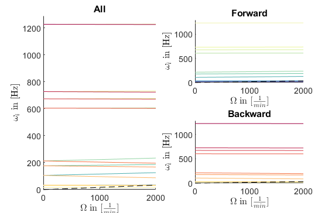
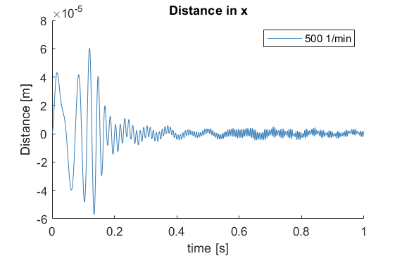
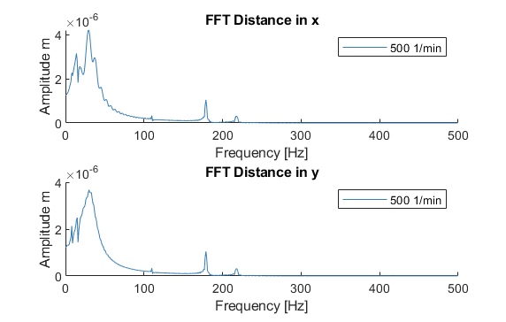

Simulation file for the MBTR¶
This is a simulation file for an investigation (approximation with spring-damper) of a real AMB test rig. Of interest is the behaviour of the rotor in steady state (modal analysis) and in run-ups (campbell analysis) as well as the stationary time behaviour (at 500 rpm) resulting from an external excitation.
Closing all former figures and cleaning the workspace.
1 2 3 | close all
clear all
%clc
|
Import of the file path and of the corresponding cnfg-file.
1 2 3 4 5 6 7 | %% Import and formating of the figures
import AMrotorSIM.* % path
Config_Sim_eingebaut % corresponding cnfg-file
Janitor = AMrotorTools.PlotJanitor(); % Instantiation of class PlotJanitor
Janitor.setLayout(2,3); %Setting layout of the figures
|
Assembly and visualization of the model
1 2 3 4 5 6 7 8 9 10 11 12 13 14 15 16 17 18 19 20 21 22 23 24 25 26 27 | %% Assembly of the rotordynamic model
r=Rotorsystem(cnfg,'MBTR-TestRig'); % Instantiation of class Rotorsystem
r.assemble; % Assembly of the model parts, considering the ...
% components (sensors,..) from the cnfg-file
r.rotor.assemble_fem; % Assembly of the global system matrices: M, D, G, K
%% Visualization of the assembled rotor model
r.show; % lists the associated components of the model in teh Matlab ...
% Command Window
r.rotor.show_2D(); % Plot of a side view of the rotor elements
% r.rotor.geometry.show_2D(); % Plot of a side view of the ..
% rotor radii
% r.rotor.geometry.show_3D(); % Plot of a 3D-isometry of the rotor
% r.rotor.mesh.show_2D();
% r.rotor.mesh.show_2D_nodes();
% r.rotor.mesh.show_3D();
g=Graphs.Visu_Rotorsystem(r); % Instantiation of class Visu_Rotorsystem
g.show(); % Plot of a 3D-isometry of the rotor with sensors, loads,...
u_trans_rigid_body = r.compute_translational_rigid_body_modes; % Locates ..
% the translational DoF's of the rotor in a matrix
overall_mass = r.check_overall_translational_mass(u_trans_rigid_body) % ...
% Calculates the translational mass
|
2D side view of the rotor (left) and 3D-isometry (right). The steps in the rotor geometry (in the 2D side view) represent the reinforcements (check corresponding cnfg-file) of the main rotor and not the disc component as seen in the 3D-isometry.
 {kind=link}
{kind=link}
Running of the system analyses (modal analysis and campbell analysis) with visualization.
1 2 3 4 5 6 7 8 9 10 11 12 13 14 15 16 17 18 19 20 21 22 23 24 25 26 27 28 29 30 | %% Running system analyses
%% Modal analysis
m=Experiments.Modalanalyse(r); % Instantiation of ...
% class Modalanalyse
rpmModalAnalysis=0;
m.calculate_rotorsystem(16,rpmModalAnalysis);
%
esf= Graphs.Eigenschwingformen(m);
esf.print_frequencies();
esf.plot_displacements();
% esf.set_plots('half','Overlay') % Plots of the odd-numbered eigenmodes ..
% in overlay with the original rotor
esf.set_plots(10,'Overlay','Skip',5,'tangentialPoints',30,'scale',3)
Janitor.cleanFigures();
%% Campbell analysis
cmp = Experiments.Campbell(r); % Instantiation of ...
% class Campbell
cmp.set_up(0:2e2:2e3,20); % Set_up (omega range in 1/min, #modes)
cmp.calculate(); % Calculation
cmpDiagramm = Graphs.Campbell(cmp); % Instantiation of ...
% class Campbell for figures
cmpDiagramm.print_damping_zero_crossing(); % Prints in the Command Window
cmpDiagramm.print_critical_speeds() % Prints in the Command Window
cmpDiagramm.set_plots('all'); % Figures
Janitor.cleanFigures();
|
Representation of the 10th eigenmode (upscaled with orbits, see code line 15) of the rotor (left) and the campbell diagram (right) of the rotor
 {kind=link}
{kind=link}
Running of the time simulation (at 500 rpm for 1 sec) with unbalance and external excitation (Forward whirl sweep force) with visualization.
1 2 3 4 5 6 7 8 9 10 11 12 13 14 15 16 17 18 19 20 21 22 23 24 25 26 27 28 29 30 31 32 33 34 35 36 37 38 39 40 41 42 43 44 45 | %% Running Time Simulation
%% Stationary with avaliable calculation methods
St_Lsg = Experiments.Stationaere_Lsg(r,500,[0:0.001:1]); % In...
%stantiation of class Stationaere_Lsg
St_Lsg.compute_ode15s_ss; % ode15s - method
%St_Lsg.compute_euler_ss; % Forward euler - method (in progress)
%St_Lsg.compute_newmark; % newmark - method
%St_Lsg.compute_sys_ss_variant; state space method(in progress) ??????
%% Processing and visualization of the results
d = Dataoutput.TimeDataOutput(St_Lsg); % Instantiation of class ...
% TimeDataOutput
%% Processing and saving results
dataset_modalanalysis = d.compose_data(); % container: rpm ->
% (n,t,allsensorsxy)
d.save_data(dataset_modalanalysis,'jm_whirling-chirp_500rpm');
%% Visualizing results
t = Graphs.TimeSignal(r, St_Lsg); % Instantiation of class TimeSignal
o = Graphs.Orbitdarstellung(r, St_Lsg); % Instantiation of class ...
% Orbitdarstellung
f = Graphs.Fourierdarstellung(r, St_Lsg); % Instantiation of class ...
% Fourierdarstellung
fo = Graphs.Fourierorbitdarstellung(r, St_Lsg); % Instantiation of class ..
% Fourierorbitdarstellung
w = Graphs.Waterfalldiagramm(r, St_Lsg); % Instantiation of class ...
% Waterfalldiagramm
w2 = Graphs.WaterfalldiagrammTwoSided(r, St_Lsg); % Instantiation of ...
% class WaterfalldiagrammTwoSided
for sensor = r.sensors % Loop over all sensors for plotting
t.plot(sensor); % Time signal
o.plot(sensor); % Orbits
f.plot(sensor); % Fourier
fo.plot(sensor,1); % Fourierorbit 1st order
fo.plot(sensor,2); % Fourierorbit 2nd order
w.plot(sensor); % Waterfall
w2.plot(sensor); % Waterfall 2sided
Janitor.cleanFigures();
end
|
Time signal (x-direction) of the eddy-current sensor on the left AMB (left) and the corresponding Fourier analysis (right)
 {kind=link}
{kind=link}